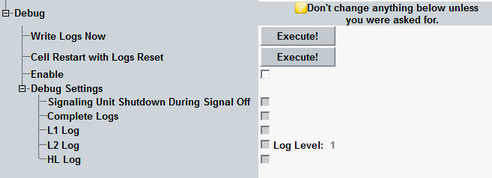

Debug Configuration
The "Debug" node configures the log file generation and selects which message types are replicated for analysis.
Do not enable the debug mode during regular operation. It impacts the test performance, timing, hard disk usage, and so on. |

Debug configuration
The settings are not affected by a reset or preset. They are not stored in save files. A reboot restores the default settings.
Writes all WCDMA log files to the system drive.
Enables the configuration of the "Debug Settings".
Switches the cell signal off and on and clears log files.
Selects the types of control messages to be logged. The settings affect log files and message monitoring.
- "Signaling Unit Shutdown During Signal Off": After a signal switch-off, triggers a signaling unit shutdown and writes all the logs
- "Complete Logs": Writes all the logs which are usually created during a CMW shutdown also during a suppression. Normally only a reduced set of log files is written during suppression to save time and reduce the hard disk usage
- "L1 Log": Creates a layer 1 log without file size limit
- "L2 Log": Creates a layer 2 log within the specified level
- "HL Log": Creates a log file with all HLAPI messages